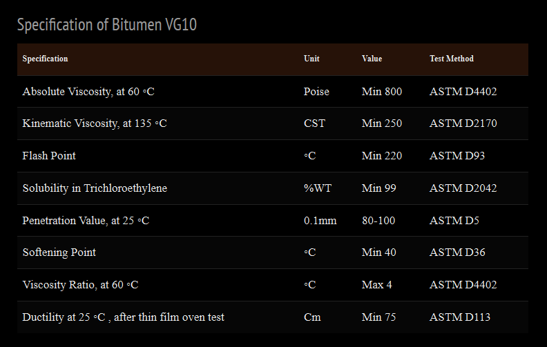

What Is Viscosity Grade Bitumen VG 10? – Iran Bitumen Supply Int │ IBSI Export
Viscosity Grade Bitumen VG 10 is a high‑quality paving bitumen designed for use in cold and moderate climates, serving as a modern replacement for the older 80/100 penetration grade. Its viscosity makes it suitable for regions where temperatures typically range from –10°C to 25°C, offering the flexibility required to prevent cracking in colder environments. However, because of its relatively low viscosity, VG 10 is not recommended for hot climatic zones where higher rutting resistance is necessary. The term “VG” stands for Viscosity Grade, referring to the bitumen’s resistance to flow. Bitumen VG 10 has a lower viscosity compared to other grades, making it ideal for areas with moderate traffic loads and cooler temperatures. It is a dark, sticky, petroleum‑derived material widely used in asphalt concrete production, road construction, roofing, and waterproofing applications. With a softening point of at least 45°C, VG 10 provides durability, stability, and resistance to deformation under traffic and weather stresses.
History of Bitumen VG 10
Bitumen has been used for thousands of years, with ancient civilizations such as the Egyptians, Babylonians, and Persians applying it in construction and waterproofing. The Romans later used bitumen to pave their roads. The modern classification of VG 10 emerged in the early 20th century when the American Association of State Highway Officials (AASHO) introduced standardized grading methods based on viscosity at 60°C. The penetration test, which measures how deeply a standard needle penetrates the bitumen, originally classified materials with a penetration value of 80–100 as VG 10. As road networks expanded and traffic loads increased, VG 10 became a preferred grade for its balance of flexibility and strength. Today, it remains one of the most widely used viscosity‑grade bitumens in global road construction.
Applications of Viscosity Grade Bitumen VG 10
Bitumen VG 10 is primarily used as a binder in asphalt mixes for road construction. Its ability to create a strong, flexible bond between aggregates makes it suitable for highways, city roads, and airport pavements in cooler climates. It is also used in the production of asphalt concrete for parking lots, sidewalks, and driveways. Beyond paving, VG 10 is widely used in roofing materials, including asphalt shingles and roofing felt, due to its waterproofing properties. It is also applied as a sealant in underground waterproofing systems, dams, and bridge decks. In industrial applications, VG 10 is used for pipe coating, protecting pipelines from corrosion and environmental damage. Its versatility makes it a valuable material across the construction and infrastructure sectors.
Properties of Viscosity Grade Bitumen VG 10
Bitumen VG 10 typically exhibits the following characteristics: Penetration values generally fall between 80 and 100 at 25°C, while the softening point ranges from 40°C to 50°C. Its ductility is usually between 100 and 150 cm, indicating good flexibility. The flash point ranges from 220°C to 250°C, ensuring safe handling at high temperatures. VG 10 is highly soluble in trichloroethylene, with solubility levels between 99.0% and 99.5%, and its density typically ranges from 1.01 to 1.06 g/cm³ at 25°C. The kinematic viscosity at 135°C usually falls between 250 and 400 cSt, confirming its suitability for cold‑region paving.
Packing Options for Bitumen VG 10
At IBSI Export, Bitumen VG 10 is available in several packaging formats to meet diverse project and transportation requirements. It is commonly supplied in 180 kg new steel drums, with approximately 110 drums loaded into a 20‑foot container. It is also available in 375 kg Bitubags, allowing up to 24 metric tons per container. For large‑scale projects, VG 10 can be shipped in bulk via bitumen carriers, typically ranging from 2,000 to 20,000 metric tons. Additional options include flexi bags with a capacity of 20 metric tons and tanker trucks capable of transporting 25 metric tons.

Specification of Bitumen VG‑10